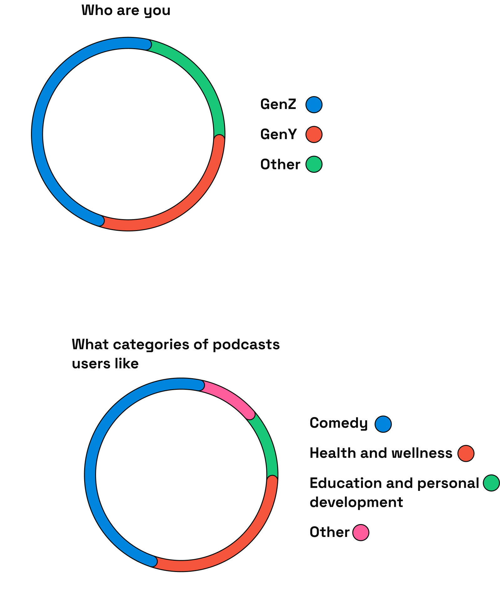
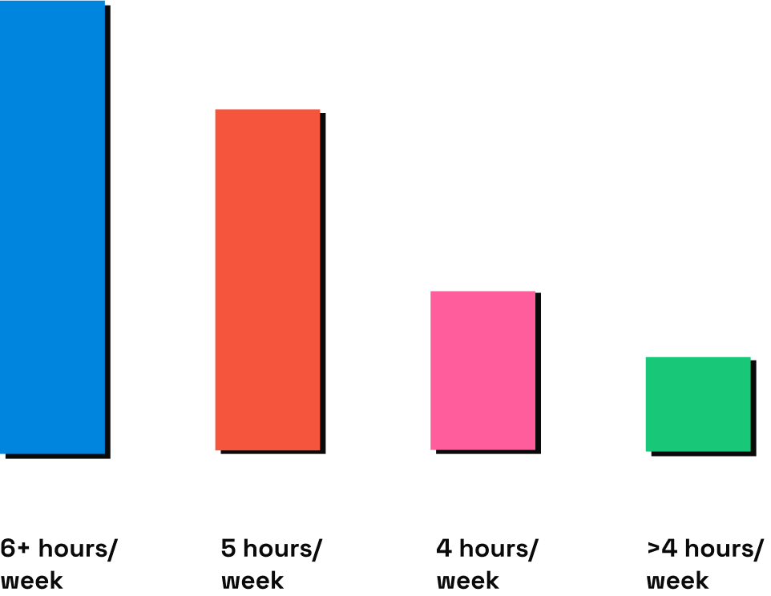
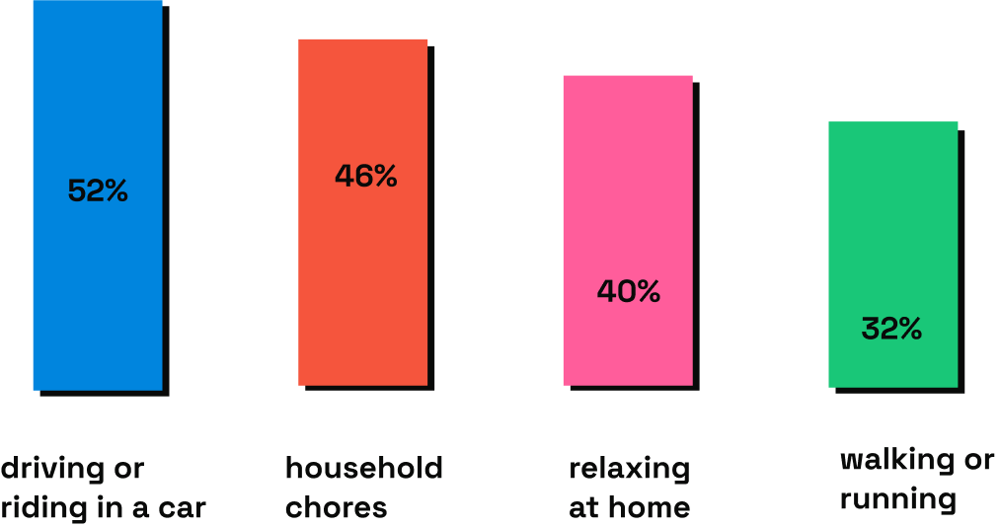

The Primary Podcast is the app what users can listen podcast and metal heath created by psychiatrists and psychologist. This app is created the those searching for guidance from professionals that specialize in dealing with metal heath issues.
The Primary Podcast made a user-friendly and intuitive for a podcast app.
A great podcast app should have a user-friendly interface, robust search engine, the ability to create and manage playlists, subscription features, and customization options.
User research is an essential part of developing a podcast app. By conducting user research, developers can gain insights into the needs and preferences of users, which can help inform the design and development of the app.
The length of time users listen to podcasts can vary greatly depending on the individual listener and their preferences. Some people prefer shorter podcasts that they can listen to during a commute or workout... According to a study by Edison Research, the average podcast listener listens to about seven podcast episodes per week, with an average listening time of about six hours and 37 minutes per week.
When listening to podcasts, people usually engage in activities that allow them to multi-task or occupy their hands, such as commuting, exercising, doing household chores, or working on projects.
The Primary Podcast app is highly competitive, with each app offering its own unique set of features and advantages. Users have a wide range of options to choose from, and the success of each app will depend on its ability to differentiate itself and provide a high-quality user experience.
Discovery: One of the biggest issues for users is discovering new podcasts that align with their interests. Many users feel overwhelmed by the number of podcasts available and struggle to find new content.
Personalization: While some podcast apps offer personalized recommendations, others do not. Users may be more likely to engage with a platform that can provide tailored content suggestions based on their listening habits.